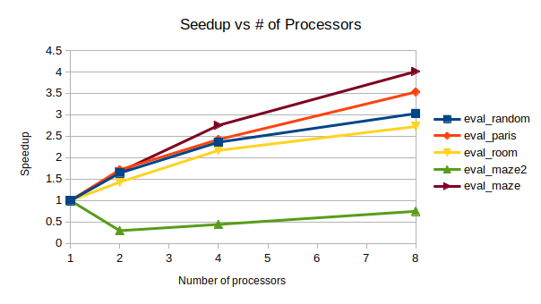

| Date | Tasks |
|---|---|
| April 3-7 | - Implement single-threaded A* and CBS |
| April 10-14 | - Naïve multi-threaded CBS |
| April 17-21 | - Analyze performance and identify bottlenecks - Project Milestone report |
| April 24-28 | - Improve performance of parallel CBS |
| May 1-5 | - Finalize improvements - Perform detailed analysis - Project Report due - Project Poster Presentation |
| Date | Tasks |
|---|---|
| April 17-21 | 1. Reduce contention issues in high level CBS parallelization - Matthew 2. Finish evaluation scripts for easier testing - Jae |
| April 24-28 | 1. Final tweaks/improvements before freezing codebase (both) 2. Perform detailed analysis (both) |
| May 1-5 | 1. Project Report due 2. Project Poster Presentation |
We succesfully implemented sequential CBS in C++ and were able to validate that our solutions were correct and optimal by comparing it to several benchmarks. We have also begun to setup the evaluation suite that we will use for comparing our results by generating random locations for agents within a specific environment. We are also at various stages of completion for the paralleization of the algorithm. We have chosen two separate approaches to determine if one is better than the other.
The two approaches to parallelization were to either parallelize the high level search which we attempted briefly and had mixed results. Part of the work moving forward will be to put more focus on this front to reduce contention and split tasks more efficiently. The other approache was to parallelize the low level A search using a technique called Hash Distributed A (HDA). A is purely sequential and only considers the top of a priority queue at each timestep, while HDA considers multiple nodes by using multiple queues. We successfully implemented and tested HDA using a shared address space approach, but we found the performance was below expectations. Cursory evaluation showed contention and synchronization to be the issue, and further analysis is ongoing. For now we will focus on the high level parallelization.
Our goals for the poster session will not change from the intial goals we set out. Below is a list of our planned goals and those that have been completed thus far.
Planned Goals:
As is shown above we have completed a majority of the planned goals. The remaining goals for evaluation are relatively simple and will take a very short amount of time to complete. We are still currently in the process of refining our parallel CBS algorithm as we have been able to show a speedup, but not to the degree we would like. As for the stretch goals, due to time constraints (mainly from the myriad of other projects from other classes) we will not be attempting them.
We will show the results of our analysis i.e. graphs/tables of performance speedup as well as a couple videos of the solving various problems. We may also briefly discuss major bottlenecks we found and other interesting findings.
Our parallelized CBS achieved correctness, enabling it to solve Multi-Agent Path Finding (MAPF) problems. The GIFs below show two problems being solved:

As mentioned, HDA was successfully implemented and tested: comparing against sequential outputs shows that we have achieved correctness, and no race conditions exist. Testing showed that HDA tended to outperform A* under adverserial conditions (ie. heuristic for map is weak, and the path to the goal is non-obvious), but the speedup wass small relative to number of processors. The algorithm is also very complex, which makes it difficult to modify or improve upon. Lastly, it scales poorly with number of processors: since we are using a shared address space approach, contention and the blocking of processors via mutex's increases signficiantly as more processors are used. For this reason, we will not be pursuing this method for the rest of the project.
Below is a table showing HDA (using 8 processors) speedup compared to A:
| Map | Speedup |
|---|---|
eval_coast  |
1.148 |
eval_maze  |
1.375 |
eval_maze2  |
0.392 |
eval_paris  |
1.454 |
eval_random  |
1.475 |
eval_room  |
0.842 |
Below is a graph showing HDA* multiprocessor speedup relative to using just one processor:

Our current issues/concerns is how to efficiently perform the task breakdown in the high level CBS. Since a large part of the algorithm relies on the priority queue it is an interesting challenge to split the work amongst processors without violating guarantess on correctness that the algorithm provides. However, we are confident with a little more time we will be able to find an appropriate solution.